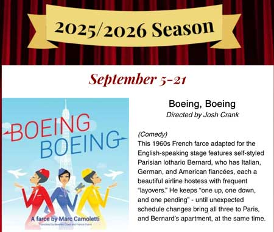

Ward-Thomas Museum


Trumbull New Theatre
Ward — Thomas
Museum
Home of the Niles Historical Society
503 Brown Street Niles, Ohio 44446
Click here to become a Niles Historical Society Member or to renew your membership
Click on any photograph to view a larger image, click on image again to zoom into photograph.
|
Trumbull New Theatre is located near the Eastwood Mall on Route 422 in Niles, Ohio. |
Trumbull
New Theatre, Inc. Trumbull New Theatre, Inc. originated in January, 1948 as an off-spring of a YWCA study group supervised by Mrs. Dorothy Gmucs. Wishing to expand their activities, the members of that group asked Mrs. Frances Pendleton to help them start a theatre group. Mrs. Pendleton agreed, somewhat reluctantly, having given up active participation in theatre work when she married and moved to Warren. She was doubtful of the chances for survival of such a group in Warren and so a strict set of standards was established, most of which are still in effect, including the principle of self-support. TNT is not, and has never been, subsidized, but has always been self-supporting. |
|
 |
2025-2026 Season The first performance by Trumbull New Theatre will be a comedy directed by Josh Crank will take place September 5-21. If you have a request or question concerning tickets, please call our box office at 330-652-1103 and leave a message.
for a listing of all performances for the season of 2025-2026, follow the link below: |
|
| |
||
|
Page from guest list for the first production of Noel Coward's “Hay Fever”. The Pendletons had three children: Austin, Alex, and Margret. Alex signed the guest book |
The Pendleton’s soon found their home swarming with the activities of the group. At each of the early meetings and rehearsals everyone contributed a dime to the kitty until enough had been accumulated to finance an evening of one-acts. In May, with total savings of $60, they felt they were ready and the one-acts were presented - to an invited audience - in the Pendleton’s living room! Later, after two successful separate programs of one-acts, it was decided to try a full three-act production and the play chosen was Noel Coward’s “Hay Fever”, a comedy about a wacky, theatrically oriented family! The Pendleton home continued as the base of operations and the living room as the stage but “Hay Fever” proved so successful that the American Cancer Society contracted to sponsor a performance of it. Full sized sets were constructed and TNT trod the boards of a real stage for the first time - at Konold Auditorium in Harding High School. One more play was presented in the Pendleton living room, “Hotel Universe”. The next five were at Konold and it looked as though the high school would be the home of the group for quite a while. The stage hands union thought otherwise, however, and with a show already in rehearsal a search was begun for a non-union stage. Shelter was found at the First Presbyterian Church, a small stage, to be sure, after the vastness of Konold, but we were still in business. Three productions were presented here but subtle restrictions made it mandatory that TNT look elsewhere again. An agreement was made with the school board and one school auditorium, that at the newly constructed Turner Junior High School, was kept exempt from union restrictions. Seven productions followed at Turner, necessitating building and painting scenery elsewhere (Anywhere!), moving everything to the school about two nights before opening, dress rehearsing in the midst of bedlam, and then striking and moving out closing night. Expenses were high, especially with overtime
pay for school employees, when it finally occurred to us that
the second floor loft we had been renting on Main Street for storage,
a meeting place and a workshop had potential as a theatre - small,
but our own. |
|
| |
||
Page from guest list for the first production of “Hay Fever” – January 21, 1949. |
The Pendleton home continued as the base of operations and the living room as the stage but “Hay Fever” proved so successful that the American Cancer Society contracted to sponsor a performance of it. Full sized sets were constructed and TNT trod the boards of a real stage for the first time - at Konold Auditorium in Harding High School. One more play was presented in the Pendleton living room, “Hotel Universe”. The next five were at Konold and it looked as though the high school would be the home of the group for quite a while. The stage hands union thought otherwise, however, and with a show already in rehearsal a search was begun for a non-union stage. Shelter was found at the First Presbyterian Church, a small stage, to be sure, after the vastness of Konold, but we were still in business. Three productions were presented here but subtle restrictions made it mandatory that TNT look elsewhere again. An agreement was made with the school board and one school auditorium, that at the newly constructed Turner Junior High School, was kept exempt from union restrictions. Seven productions followed at Turner, necessitating building and painting scenery elsewhere (Anywhere!), moving everything to the school about two nights before opening, dress rehearsing in the midst of bedlam, and then striking and moving out closing night. Expenses were high, especially with overtime pay for school employees, when it finally occurred to us that the second floor loft we had been renting on Main Street for storage, a meeting place and a workshop had potential as a theatre - small, but our own. Six productions saw life in this cozy atmosphere and in this time we learned all too well the value of working in a place that was completely ours, to do with as we pleased, without restrictions. Rehearsing with the set for more than a couple of nights became a necessity rather than a luxury. |
|
|
Views of one of the early TNT
plays |
The return to Turner saw eight more productions presented there, and also saw the desire for a home of our own growing greater. We had been budgeting with fury and in 1955 managed to purchase, with $3,750 hard-earned proceeds from productions, three-quarters of an acre of land on Route 422 south-east of the city. A fund raising campaign was begun. The building was to be literally a do-it-yourself project with the membership pledged not only to personal cash contributions but to doing as much of the work as possible - and probably a little more! When enough money had been raised to guarantee erection of at least the shell of the building the groundbreaking was scheduled - and it started to rain! The summer of 1956 was without doubt one of the wettest in Ohio history and the start of construction was delayed until September. Delayed with it was the season of plays promised the Patrons when money was being raised. |
Close-up of one of the characters in an early play presented at the Pendleton house. |
| |
||
Exterior view of the original building. |
It was one long cold winter devoted to getting the building ready to open. Girls who could barely pick up a brick soon found they move two cement blocks, one in each hand, just as easily as men. In fact, some of the girls even laid up the cement block walls. Choicest job of all was tending the bon fire in the middle of what is now the auditorium, the only source of heat during construction. Workers came out swathed in countless layers of clothing, warmed up at the fire, raced to the frozen outer edges to work, then raced back to thaw out, then back to work, and so on. It would be impossible to estimate how much salt was used in the mortar to keep it from freezing. It may well be the main ingredient in the building’s construction! A small crew devoted to installing drain tile could be seen regularly chipping through a layer of ice to get at their work. |
|
Images of the interior construction: cement work for auditorium, lighting system and stage framework. |
 |
 |
Groundbreaking for the Trumbull New Theatre. September 1956. |
The opening show was to be “The Seven Year Itch”. Optimistically, it had been cast in October for an early winter opening. It was rehearsed, and rehearsed, and rehearsed - and postponed, and postponed, and postponed. It’s the only TNT show that ever rehearsed for six months. It was finally decreed that, ready or not, March 15, 1957, was “It”! Things really started to hum. The play moved onto the stage and rehearsed through construction work thus giving the cast the most practical lessons in projection they could ever get. The set was, literally, constructed in less than a week between the hours of midnight and 5:00 or 6:00 a.m. Opening week was a classic blend of utter confusion and extreme good luck with deadlines being met with hairline accuracy at every turn. For example - at 5:00 p.m. opening day every vehicle on the lot was backed up to the doors and all construction equipment not wanted in sight for the opening was loaded into them to be hauled away. People were still searching for their belongings a year later. At 6:30 the plumber arrived and endowed us with water. At the same time the furnaces were connected, the florist arrived to decorate the lobby, and the members rushed home to get really dressed up for the first time in months. The women’s long gloves covered the calloused hands of laborers and the men’s tuxedos covered many a newly developed muscle. |
|
The building of that first stage of the theatre was definitely a once-in-a-lifetime experience for those involved and when, four years later with the mortgage paid off, it was decided to add the permanent lobby (of brick and glass with a vaulted ceiling), the entire operation was contracted. The work also included remodeling the original lobby to include a checkroom and small kitchen. The lobby addition has provided invaluable space not only for the comfort and convenience of audiences but for meetings, rehearsals, exhibitions, receptions and an occasional party. It is hoped that one day a permanent backstage building may be added to replace the temporary facilities now in use. This much needed building will increase dressing room space and add wardrobe, prop, and set material storage as well as expand the scope of productions allowing elaborate multiple-set shows involving scenery on wagons. Left: TNT breaks ground for new $22,000 lobby addition. Movie star, Jack Carson, who appeared here last week in Kenley Theatre's "Take Me Along", turns the first shovel for Trumbull New Theatre's lobby addition project. The job will be completed by October 1961. The first phase of the TNT Playhouse which cost $25,000 was completed in 1957. It included the stage, auditorium, and foyer. The mortgage was burned on this first step in June 1960. Pictured are: Richard Boyd, Marcia Russ, Carson, George Smith and TNT President, Stan Hollingsworth. |
||
TNT production cast for "Dark of the Moon", the first production of 1961-62. Scene from Tennesee Williams’ Set for “Orpheus Descending”. |
In the fall of 1967, after more than a year of negotiations, a parcel of land two hundred feet square behind and slightly to the east of the theatre was purchased thus solving the problem of what to do for space when the expansion of the theatre could be realized. The property thus acquired could not be immediately utilized even for parking as a result of its being paid for with cold, hard cash! But it is ours! Audience preference, naturally, counts high in scheduling a season’s productions but in order to grow and to learn you must be willing to extend yourself a bit. We somewhat doubtfully attempted “Streetcar Named Desire” in 1963 and found the local public highly receptive to Tennessee Williams and now others of his plays are among our most successful. Our first try at Shakespeare, “As You Like It”, also in 1963, convinced us we should wait a while before trying again. We finally did try again, in 1966 with “The Taming of the Shrew”, with great success. We had our doubts about doing a musical but found with “The Boy Friend” in 1960 that enthusiasm, spirit and hard work often more than compensate for slight deficiencies in musical talent. Original scripts always have special appeal, both to us and audiences, and we have had considerable success with the three we have presented. First was “A Walk on the Water” by then member Paul Kimpel. Second was a musical version of “Tom Jones” with book adaptation by Austin Pendleton and third was Robert Anderson’s “The Days Between” though this play, actually, was produced by some fifty community and college theatres around the country within the same season. The summer of 1964 we sponsored a one-week Workshop under the direction of Dr. Robert Corrigan who is now at New York University. There was an afternoon program for youngsters and an evening session for adults. The following summer a Teen Workshop resulted under the guidance of TNT members and the following winter it became a regular part of TNT activity. Enrollment is always enthusiastic and many of the youthful participants eventually become involved in our regular season’s productions as well as working towards their own early summer presentation. You must be sixteen years of age and have parental approval to be an Apprentice and be eighteen years of age to be a Member but willingness to work has proven to be the surest means of finding an area in which you can participate. Apprentices are awarded points and when one hundred have been accumulated (and points are awarded for every type of theatre activity) the name is then presented for election to membership. About the only difference between Apprenticeship and Membership is that members have the right to pay dues and to vote in membership meetings and at the annual meeting of the Corporation. One of the most unique aspects of TNT is that the majority of its directors and actors have received their training within the group. A would-be director starts, for instance, by assisting the director of a regular production and/or by trying his or her hand at one-act plays which are either presented to the membership at the regular monthly meetings or taken outside the theatre for public service or entertainment programs. In January, 1967, we experimented with another full evening of one-acts, this time as part of a regular season, staffing it with four novice directors. Acceptance was enthusiastic and in the following season two of these novice directors were assigned full sized productions. We also present Costume Parades featuring the
more interesting and unique items we have accumulated in Wardrobe
over the years, a collection which we now estimate at slightly
over a thousand costumes. This includes authentic period clothing
given us as well as things we have constructed for productions. |
|
 |
TNT belongs to OCTA, the Ohio Community Theatre Association, a state-wide organization of nearly one hundred community theatres. OCTA members maintain contact through the year with OCTA Newsletter and by visiting each other’s theatres. They meet each fall in annual Conference for seminars, workshops, lectures, compare notes and, in general, learn from and of each other. We also belong to APT, the American Playwrights Theatre, an organization sponsored by the American National Theatre and Academy and the Ohio State University. The APT purpose is to provide college and community theatres with scripts by major authors either before or during their professional productions. It was in this manner that we produced “The Days Between”. The term ‘Off Broadway’ isn’t geographical. Broadway theatres have 500+seats, Off-Broadway have 100–499, and Off–Off–Broadway theatres have less than 100 seats. |
|
| YOUNGSTOWN
STATE UNIVERSITY FRANCES PENDLETON
First plays were performed in the Pendleton home. Frances Pendleton was born on February 1, 1912 in Detroit, Michigan. She was the daughter of William Charles and Margret MacGergor Manchester. She attended school in Birmingham, Bay City and
Ann Arbor Michigan. She graduated Mrs. Pendleton's first job was with the Battle Creek Theater Company where she was the civic director. She stayed with them for three seasons (1936, 1937, and 1938). In April 1938 she married Thorn Pendleton. They had three children: Austin, Alex, and Margret. Mrs. Pendleton was one of the founding members of the Trumbull New Theater located in Niles. She has been very active in this theater group and this is her main hobby. She has also directed plays at Hiram College. |
TNT Storage area damaged by fire. Kantor: Can you tell a little bit about when they added on? P: First it was just a half circle, and then they added the lobby because there was really not enough room for the audience to flow out during intermission. Then they built two garages, the back one for set pieces and the other for a dressing room. They were just cheap garages that were prefabricated. Fortunately, some pyromaniac burned them down and we had the insurance money so we built a back stage.
View of new lobby addition, 1961. |
I want you to tell why it was called TNT. An interesting story about that is that Tom Schroth got a call one day and someone asked what happened to the theater. He asked why and they said the headline in the paper said, “TNT Explodes.” Tom Schroth has long been an active performer at the Trumbull New Theater, as well as its designer and “master builder.”
Interior of TNT playhouse, 2024 |
Austin Pendleton |
YOUNGSTOWN
STATE UNIVERSITY Schroth: Mrs. Pendleton said something that I think you have probably heard her say. She said. “At T.N.T. we give you a chance to fail.” That is so true. There you can experiment. You can fail and not be doomed forever. S: We have had some classic turkeys out there and some moments that were just spiritual delight. I guess. The thing that I love about community theater and especially the thing that I love about community theater here is that it draws everybody in. We have people who are superb musicians and superb craftsmen in building trades electrical engineers absolutely every walk of life in the community. Somehow everybody has a chance to shine a little bit. We have a hoard of teenagers who have nothing else to do but run over to McDonald's and come over to the theater to work. The marvelous thing about it is the end product. It is something that everybody works on. Everybody can see a worth in it. I don't know of anything else in the arts that adds that to a community the way theater does. It does with everyone. Everyone I know gets involved
in theater. The thing that makes T.N.T. unique and which promotes
the sort of thing that you are talking about is that we are totally
unprofessional. Nobody is paid for anything. If you can't donate
it or steal it, you don't buy it and you don't pay for a bloody
thing out there. |
|
|
|
||


{kind=link}
{kind=link}
{kind=link}
{kind=link}
{kind=link}
{kind=link}
{kind=link}
{kind=link}
{kind=link}